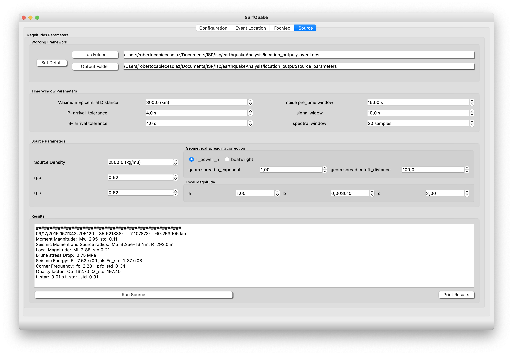
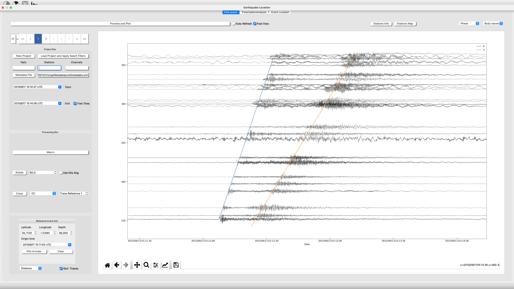

Welcome to Integrated Seismic Program (ISP) Documentation
Integrated Seismic Program is an amenable toolbox that joins functionality and standard algorithms commonly used in seismology. The complete software is separated in several modules and each module is designed to overcome a specific task.
Cabieces et al. Integrated Seismic Program (ISP): A New Python GUI‐Based Software for Earthquake Seismology and Seismic Signal Processing. Seismological Research Letters 2022;; 93 (3): 1895–1908. doi: https://doi.org/10.1785/0220210205
GitHub ISP github.
Follow us in: twitter.
News 11-Nov-2024
- We have renew the Synthetic Toolbox.

-
We have included an option to run your own Python script from a seismogram processed with ISP. You can see how to use this option at Earthquake Seismology - Run Script .
-
Now you can read ObsPy catalogs using ISP Earthquake Seismology - Search in Catalog .
Complementary Software
surfQuake A new software to streamline the workflow of estimating seismic source parameters:
- Release Date: 18-April-2024
- EGU-24 presentation

Software Structure
Index: Modules
- Earthquake Seismology
- Time-Frequency Analysis
- Focal Mechanism / Moment Tensor Inversion
- Array Seismology
- Receiver Functions
- Ambient Noise Tomography
Index: ToolBoxes
- Database
- Retrieve Data (FDSN)
- Probability Power Spectral Density Function (PPSD)
- Synthetic Generator
- Near-Real Time Adquisition
Something about ISP
We have added a widget to help users to automatically estimate Moment Magnitude, Local Magnitude and additional source features, following SourceSpec .

We have created a repository with an example of 3D model
We have implemented the conexion between Erthquake Location and Time-Frequency Anlysis
The ISP team has recently developed:
- Earthquake Analysis module Upgraded
In this upgrade you can create your project from your individual files or from your sds structure. We have also included a fast way to search your waveforms from a catalog (./isp/examples/catalog/).
Now it is created a connection Earthquake Analysis to TF Analysis to allow the user a rapid deep signal processing investigation.
Moreover, it is included a very nice way of sort tyour waveforms by distance and showing the theoretical Travel-Times.


- Seismic Ambient Noise Tomography
For now, It is available the Empirical Green Functions retrieval of vertical and Horizontal components, synchronize clocks using EGFs ,a tool to measure Group and Phase velocity from dispersion curves and create dispersion maps.
An example with the results of Cabieces et al., 2022 "Upper lithospheric structure of northeastern Venezuela from joint inversion of surface wave dispersion and receiver functions" can be found in ./isp/ant